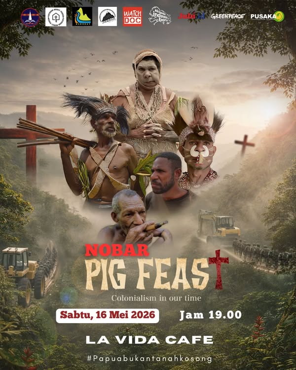
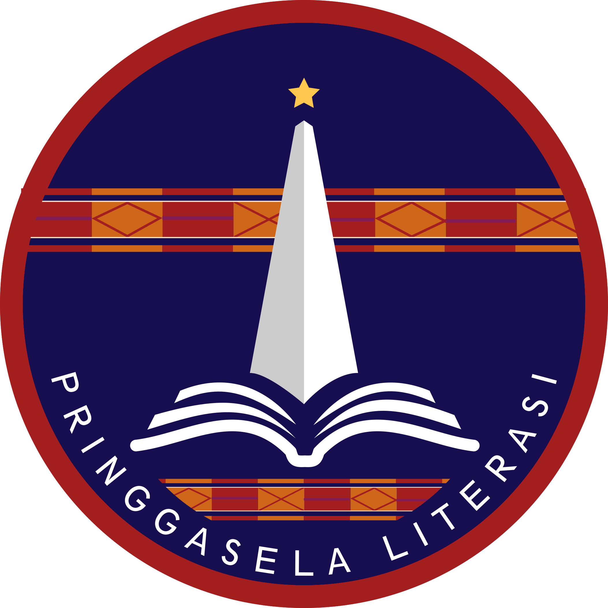
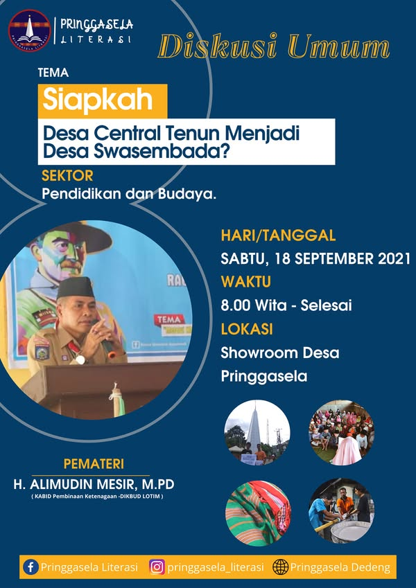
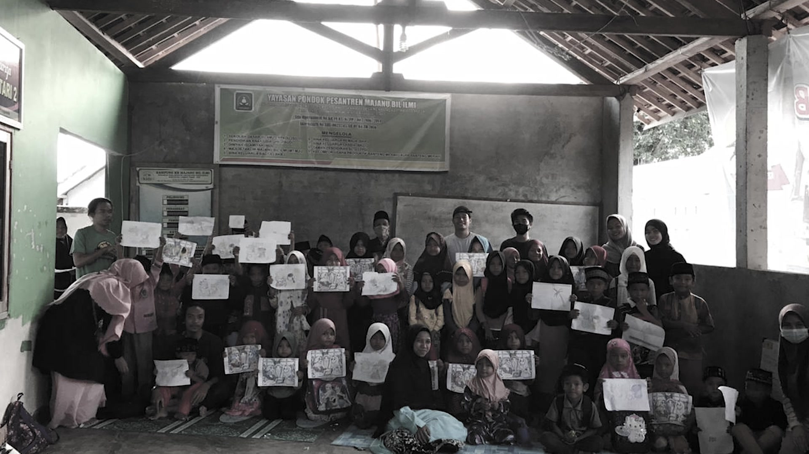

ARSIP KEGIATAN · NONTON BARENG
Nobar Pig Feast
Menonton bersama menjadi ruang untuk membuka percakapan dan melihat persoalan dari sudut pandang yang berbeda.
- Tanggal
- 16 Mei 2026
- Tempat
- La Vida Cafe

pringgaselaLITERASIMari terlibat ↗Ruang perjumpaan, percakapan, dan karya bersama komunitas.
Dari layar film hingga ruang diskusi,
ada banyak cara untuk belajar bersama.

Menonton bersama menjadi ruang untuk membuka percakapan dan melihat persoalan dari sudut pandang yang berbeda.

Diskusi terbuka tentang kesiapan desa sentra tenun menjadi desa swasembada, dengan fokus pada pendidikan dan budaya.

TONTON DI FACEBOOKMerayakan ulang tahun Pringgasela Literasi lewat “Samana”: sebuah lagu tentang perjalanan, harapan, rindu, dan rumah yang dibangun bersama.
Lirik: Ruang Sugesti Team
Penyanyi & penggubah: Sekar Yektiningtyas
Perayaan ulang tahun pertama Pringgasela Literasi menjadi ruang perjumpaan dengan komunitas literasi di Lombok Timur, membawa semangat menyebarluaskan kesadaran literasi.
Baca liputan di Sinar5News ↗